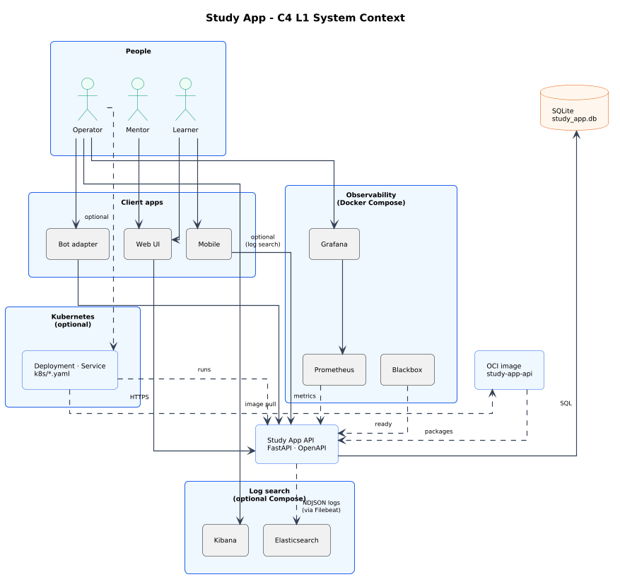
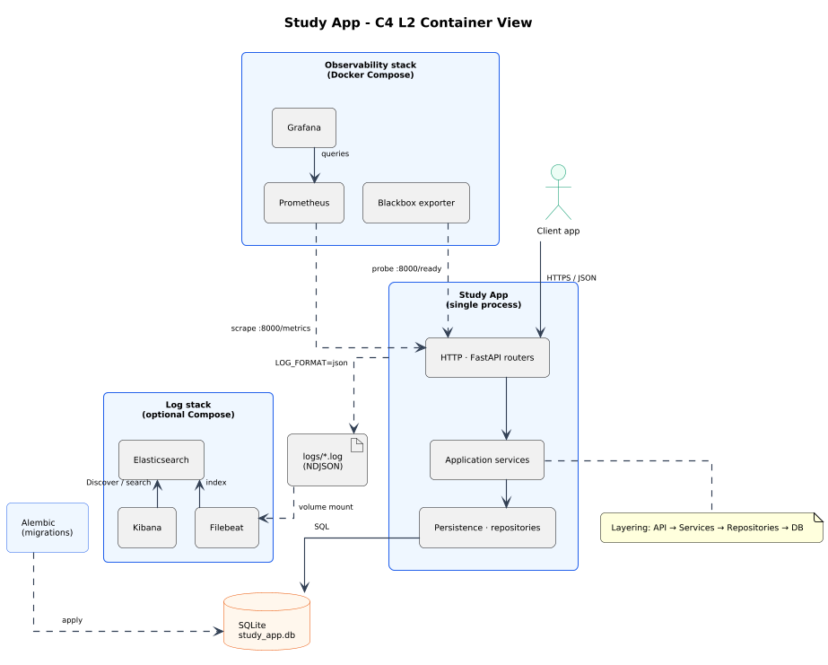
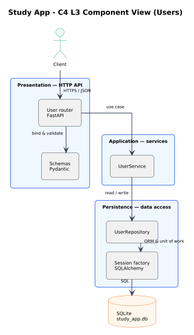
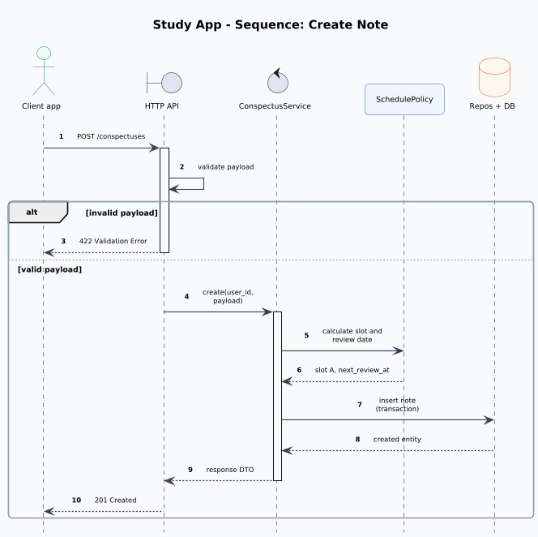
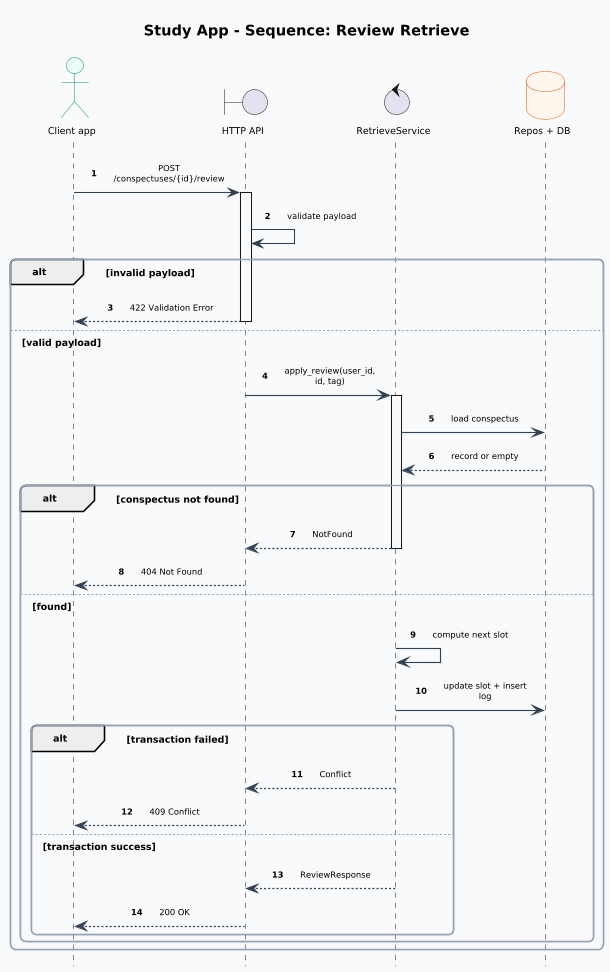
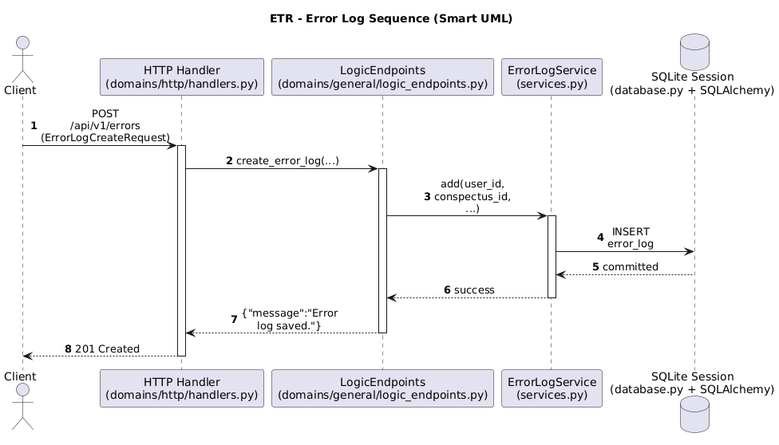

ETR Study API — System design
Overview
This page records what the service is for, what is in scope,
how it is structured (C4 views), functional and non-functional
requirements, and where to find contracts and sequences.
➜ Methodology is covered in Methodology.
➜ API contracts and sequences are covered in HTTP API (internal hub).
Problem Statement
Goal: provide API for ETR-based learning flows.
Problem: retention and mistake tracking are inconsistent without process automation.
Solution: backend stores note structure, supports retrieval scenarios, and keeps error logs.
Context and Boundaries
| Scope | Details |
|---|---|
| In scope | user flows, notes, retrieval, error-log, schedule recommendations |
| Out of scope | auth/roles, push notifications, analytics, attachments |
Architectural Decomposition
The project uses a microservice-oriented architecture with FastAPI as the main backend service. All business logic, data operations, and API endpoints are contained within a single container, using SQLite for data storage. Monitoring and observability are handled by Prometheus, Grafana, and Blackbox, which run together in a separate Docker Compose stack. Searchable structured logs (NDJSON on disk, optional Elasticsearch and Kibana via another Compose file) are documented in ADR 0023.
3.1 System context
People, client surfaces, the Study API, SQLite, the API as an OCI image
(study-app-api), optional Kubernetes rollout (k8s/*.yaml), and
observability
via Docker Compose.

docs/uml/architecture/system_context_view.puml.
The OCI image packages the API; the Kubernetes package is optional and
shows Deployment/Service wired to the same image and runtime. The Observability group
is
Docker Compose (Prometheus scrapes metrics; Blackbox probes readiness; Grafana reads Prometheus); an
optional Logging stack (Elasticsearch, Kibana, Filebeat) can index NDJSON from the host
log directory. Details:
Docker image and local Kubernetes,
ADR 0015.
3.2 Containers and runtime
Logical containers inside the Study App process, persistence, migrations,
and
how the observability stack reaches the API (typically on localhost:8000 from Compose).

docs/uml/architecture/container_view.puml.
The API container image uses scripts/container_entrypoint.sh (migrate + Uvicorn). Local
development may run Uvicorn on the host without Docker; Compose still provides Prometheus, Grafana, and
Blackbox for parity with production-like metrics; optional Elasticsearch/Kibana/Filebeat ship file logs
for
local search (ADR 0023).
3.3 Component view — Users domain
One vertical slice through the monolith: presentation (router and schemas), application service, persistence (repository and SQLAlchemy session), then the database. Conspectuses, error logs, and schedules follow the same layering with different modules.

docs/uml/architecture/system_component_view.puml.
Illustrative paths: app/api/v1/user.py, app/schemas/user.py,
app/services/user_service.py, app/repositories/user_repository.py,
app/core/database.py.
Functional Requirements
| Requirement | Description |
|---|---|
FR-1. User management by system_user_id and system_uuid
|
Create user on first call and preserve stable identity for downstream operations. |
| FR-2. Note creation and slot assignment | Create note with required ETR structure and assign initial slot policy. |
| FR-3. Retrieve scenario and slot transitions | Return due notes and apply deterministic slot transition rules by review result. |
| FR-4. Error-log storage and retrieval | Store learning mistakes and provide ordered retrieval for review and analysis. |
| FR-5. Slot summary and schedule output | Provide aggregate slot distribution and recommended ETR schedule guidance. |
Non-Functional Requirements
| Requirement | Description |
|---|---|
| NFR-1. Performance | Typical API requests should complete under 300 ms with local DB and light load. |
| NFR-2. Reliability | Write operations are transactional; failures trigger rollback and stable error payloads. |
| NFR-3. Maintainability | Strict layering and automated endpoint tests are mandatory. |
| NFR-4. API Governance | OpenAPI/error contracts are additive and backward-compatible per version policy. |
| NFR-5. Observability | Structured request logs; Prometheus metrics on /metrics (toggle via config); health
and
readiness on /health and /ready; optional local stack via Docker Compose
(Prometheus, Grafana, Blackbox, SLO rules and dashboards) per ADR 0009 and ADR 0011. |
| NFR-6. Security by default | Protected API endpoints enforce mock API-key auth, body-size limit, CORS policy, security headers, and per-client rate limit. |
| NFR-7. Idempotency of write operations | Critical write endpoints must support safe retries via Idempotency-Key and dedup
logic. |
| NFR-8. Packaging | Production-oriented Dockerfile and image tag study-app-api:local;
optional
local Kubernetes manifests and Makefile targets per ADR 0015. |
API Contracts (Required)
Swagger UI: jump to live docs.
Security Constraints (for integrators)
| Constraint | Default value | Business impact |
|---|---|---|
| Authentication strategy | Mock API key via X-API-Key on /api/v1/* |
Integrations must send API key even in local/stub stage; unauthorized calls receive
401.
|
| Rate limiting | 60 requests / 60 seconds per client and endpoint path |
High-frequency clients must implement retry/backoff strategy; overflow returns 429.
|
| Request body size limit | 1 MB (API_BODY_MAX_BYTES) |
Payloads above limit are rejected with 413; large uploads require dedicated flow.
|
| CORS policy | Allowlist origins only (configured in CORS_ALLOW_ORIGINS) |
Browser clients from non-allowlisted origins cannot call API directly. |
| Security headers | X-Content-Type-Options, X-Frame-Options, CSP, Referrer/Permissions
policies
|
Mitigates common browser-side abuse vectors for API surfaces. |
| Idempotency requirement for writes | Idempotency-Key is required for critical write operations (e.g. user create) |
Clients can safely retry without duplicate writes; key reuse with another payload returns
409. Dedup records are persisted in DB.
|
Sequence Diagrams
7.1 Create note (conspectus)
POST /conspectuses — validation, slot policy, transactional
insert.

docs/uml/sequences/create_conspectus_sequence.puml.
7.2 Review retrieve
Load, transition slot, persist log; map domain outcomes to HTTP status.

docs/uml/sequences/review_retrieve_sequence.puml.
7.3 Create error log
Ownership checks, insert path, conflict handling on concurrent writes.

docs/uml/sequences/error_log_sequence.puml.
8. Error Matrix
Error behavior in this service is treated as a contract (stable code + key),
governed
by ADR 0003.
Where truth lives: stable identities in app/errors/common.py and
app/errors/user.py; response schemas in app/schemas/errors.py; OpenAPI examples in
app/openapi/examples/errors.py; 422 mapping logic in app/validation/user.py.
Full catalog (including all COMMON_*, USER_* and validation mapping rules) is on
Error matrix. That page is partially generated via markers by
scripts/sync_docs.py, so docs can be synchronized from code with make docs-fix.
Architecture Decisions (ADR)
All architecture decisions, their rationale, and reference links.
| Document | Description | Open |
|---|---|---|
| ADR Index | All architecture decisions, their rationale, and reference links. | Open ADR index |
| ADR Template | Template for creating a new ADR with required sections and structure. | Open template |
Developers Docs
Engineering workflow, quality gates, policies, and index of guides under docs/developer/.
| Document | Description | Open |
|---|---|---|
| Developers Docs | Engineering workflow, quality gates, policies, and index of guides under
docs/developer/.
|
Open document |